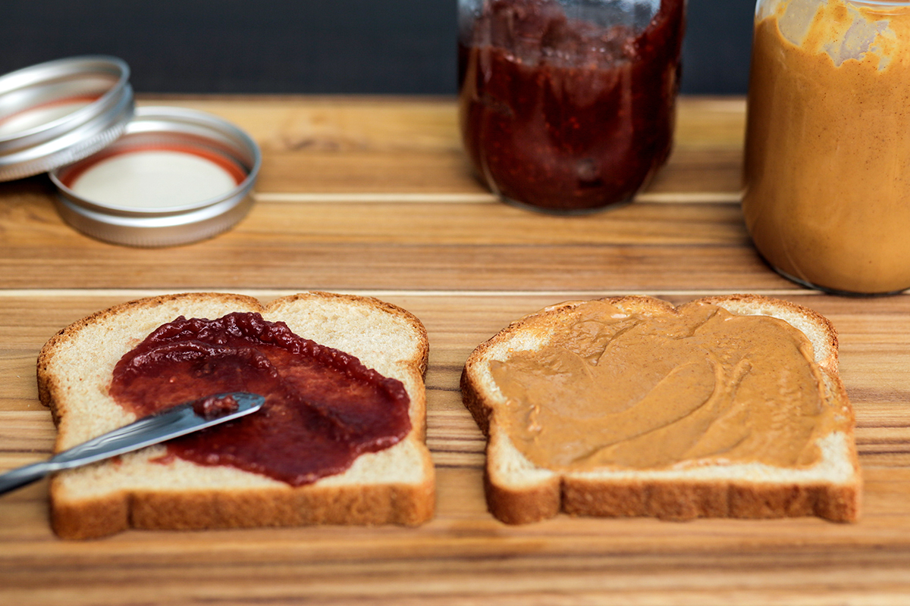

The history of this sandwich isn't exactly important but what we need to know is that for years people have been making and eating this sandwich due to its simple nature and how easy it is to make. Though easy i believe that everybody should learn it as it is a quick and decently healthy way to satisfy your hunger.(ingredients listed below)
Though the peanut butter & jelly is a common food "dish" it is still possible to have problems when eating this food. More so in the catagory of medical issues. One of the most common allergies is having a Peanut Allergy more so an allergy of certain types of nuts all together. If you don't know if you have ever had a reaction to nuts of any kind please consult your doctor before handiling the peanut butter for this sandwich
So with the medical concerns out of the lets begin. To begin please spread your peanut butter on one of the slices of bread. Next spread your jelly or jam of your preference on the opposite slice of bread. Then combine with the unspread sides facing outward as not to dirty yourself. Not that hard is it?
So just what have you created? You have created the most simplistic masterpiece of a lifetime the Peanut Butter & Jelly. Before you leave do make sure to clean up your mess nobody likes a dirty kitchen especially your parents(s). Now please enjoy your creation